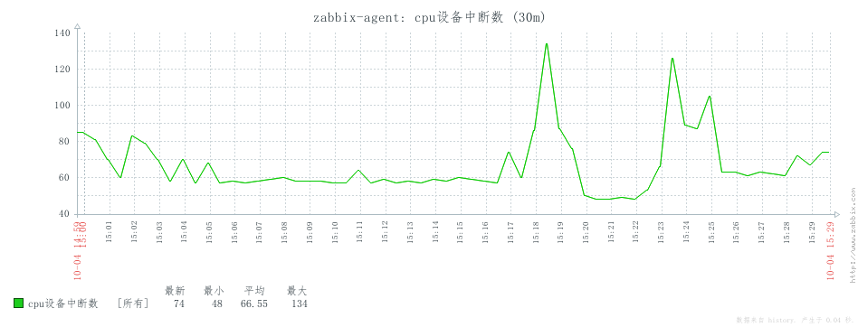
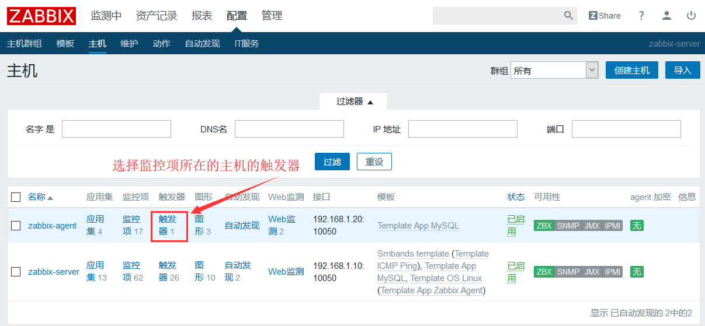
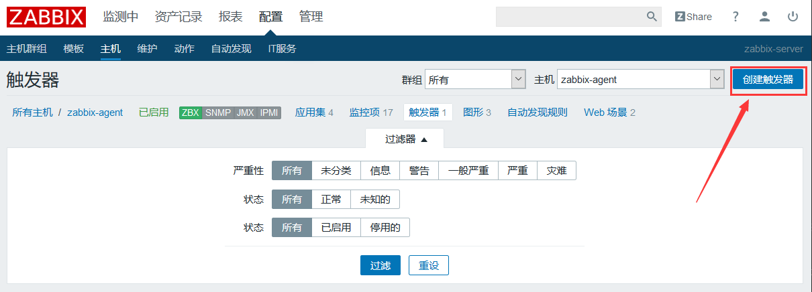
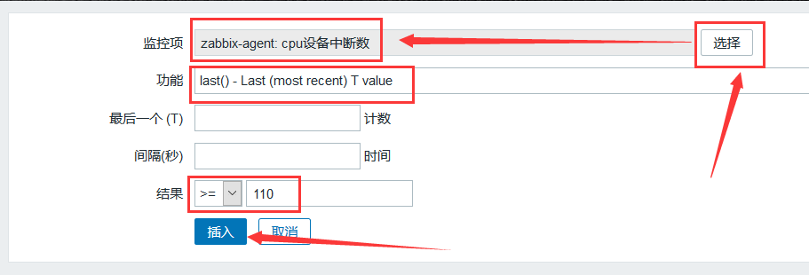
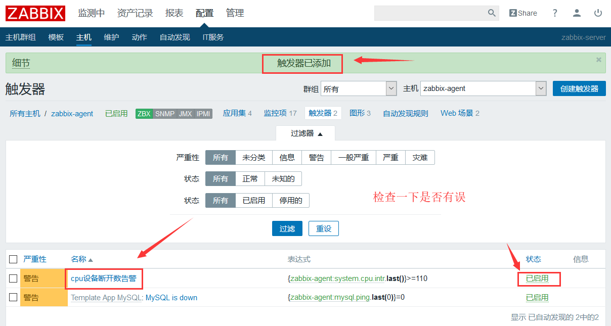

zabbix入门之定义触发器
触发器的概念
触发器的定义：界定某特定的item 采集到数据的非合理区间或非合理状态。通常为逻辑表达式。
逻辑表达式(阈值)：通常用于定义数据的不合理区间，其结果如下：
O K （符合条件） ：正常 状态–> 较老的zabbix版本,其为TRUE；
PROBLEM（不符合条件）：不正常状态–> 较老的zabbix 版本，其为FALSE；
一般 ，评定获取到的数据是否为合理区间的比较稳妥的方式是——根据最后N次的平均值来判定结果；这个N次通常有两种定义方式：
1.最近N分钟所得结果的平均值
2.最近N次所得结果的平均值
触发器表达式
基本的触发器表达式格式如下所示
{<server>:<key>.<function>(<parameter>)}<operator><constant>
server：主机名称
key：主机上关系的相应的监控项的key；
function：评估采集到的数据是否在合理范围内时所使用的函数，其评估过程可以根据采取的数据，当前时间及其他因素进行；
目前，触发器所支持的函数有avg、count、change、date、dayofweek、delta、diff、iregexp、last、max、min、nodata、now、sum等
更多请查阅官网：https://www.zabbix.com/documentation/4.0/zh/manual/appendix/triggers/functions
parameter：函数参数；大多数数值函数可以接受秒数为其参数，而如果在数值参数之前使用“#“作为前缀，则表示为最近几次的取值，如sum(300)表示300秒内所有取值之和，而sum(#10)则表示最近10次取值之和；
此外avg、count、last、min和max还支持使用第二个参数，用于完成时间限定；例如。max(1h.7d)将返回一周之前的最大值；
定义一个触发器
首先选择一个监控项，我这里先简单创建一个监控项，监控cpu设备中断数。

我们可以看到，最大值为134，平均值为66.55，根据图形的观察，我们将触发器的触发值设置为110，设备中断数大于等于110时触发告警。
添加触发器


{zabbix-agent:system.cpu.intr.last()}>=110 这段的含义是：zabbix-agent这台主机的system.cpu.intr键的最新的值大于等于110。



可以看到，绘制的图中多出了一条黄色的虚线，这个就是警戒线，图中的数据一旦高于或超过这条虚线，就会触发告警。

触发器被触发后，zabbix仪表板中将会呈现这个告警，如果设置有触发器动作的话，则会触发一些动作，比如：远程命令或邮件/微信/钉钉等告警。